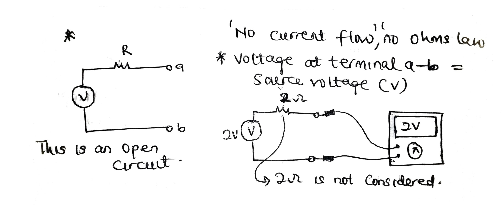

When you ask someone how can I learn the basics of circuit analysis? Most times the answer is practice-practice-practice. Though that’s right but you can only practice stuff you find easier to understand and the necessary fundamentals to have are also right because, how can you even analyze or design a circuit if you don’t know how resistor works or you don’t love dealing with calculations.
The case here is that don’t just learn circuit analysis techniques or concepts from textbooks as if they are somewhat abstract or different, try to learn how they link with each other or what can they be used for.
The short circuit scenario
For example, a short circuit is said to be by definition; that voltage across is zero while the resistance is also zero but in reality how does this help; first let sketch out a simple diagram for short circuit.

This wire with zero resistance is the cause of short circuit right, likewise in real life once you have a socket with 220v and you just plug in a piece of wire (while the two ends are stripped off) into the sockets input port then you just caused a short circuit and might burn stuff or explode.
Though if you are lucky and there is a fuse installed in your home, it’s just going to disconnect the fuse instead of damaging your devices.
But where is short circuit of benefit?
If you charge an electrolytic capacitor, it charges mostly to its maximum at an instantaneous rate and if left without been discharged can hold the charge for a very long time and can cause harm when you come in contact with it (mostly causes jolting of the hand and vibration.
.jpg)
So therefore you are advised to discharge all capacitors before dumping them in your box i.e. by short circuiting them. You can use a piece of wire stripped at both ends just as it is been discussed lately or use a screw driver.
How will short circuit concept help us in circuit analysis?
Firstly, if you have a circuit (I mean be it a small or huge circuit), let’s say this circuit shown below and the professor or the textbook you are reading from draws a wire across the battery terminal, as shown below.

Just know that those resistors are of no use because all the current will flow or follow the path with least resistance i.e. zero resistance, rather than flowing through the 220ohms and 330ohms resistors.
And this is one intuition of understanding how electricity works and that’s why mostly people got shocked if their body possess little or no resistance (i.e. if is sweat on the body or hands, or foot are placed on the ground with no insulator in between). But if we are to wear insulators like gloves, shoe etc., we would be saving ourself big time.
A little tip
while working with high voltage make sure to put one hand in your pocket or at the back and use the other hand to do stuff.
Again let us look at another scenario which is based on open circuit (I love this concept so much).
The open circuit scenario
Firstly, here are the concepts that I want you to put at the back of your mind.
Always recall
We have an open circuit only if a connecting point is broken at any point or along the wire i.e. no current flowing since if you could recall or have once hear this that current will only flow if there is a closed path, and since the path is broken – no current flow.
Now here is something fascinating, what will be the voltage across the terminal point a and b?
You might be tempted to start using ohms’ law right, c’mon. since no current is flowing, no voltage-drop across the resistance therefore the voltage at across point a and b equal the source voltage (or voltage of the battery). also since the resistor doesn’t consume any energy then it has no use there.
So in summary if you see any open circuit like that just consider that the resistor is not there and just by looking at the circuit you know what is what without even doing calculation.
The open circuit in real life
In real life, using same socket (220v) analogy, since you didn’t connect anything to it, it is in an open circuited state and until you connect something to both terminals before it is no longer an open circuit.
You might also be curious enough and ask but no resistor there? Okay now go ahead and I’m serious just take any resistor (make sure you were glove or use a safety measure) and put the resistor in only on one terminal as shown below and measure the voltage across the terminals by using a voltmeter or a multi-meter and you will find out that the resistor has no effect since no current is flowing through it.

PS.
Always remember some of this cool stuff because that’s what makes you confident as an engineer or engineering student.
Lastly as we’ve discussed before, not only understanding how things links with each other in circuit analysis but also having a good background in mathematics and topics like algebra and the likes.
But if there is the case that you are having difficulty with mathematics then I would suggest you taking free courses on mathematics by Jason (math and science) or get the full course pack on his site if you would love to learn more stuff on engineering throughout your days in college or university as an engineering student or even just a curious electronics hobbyist.